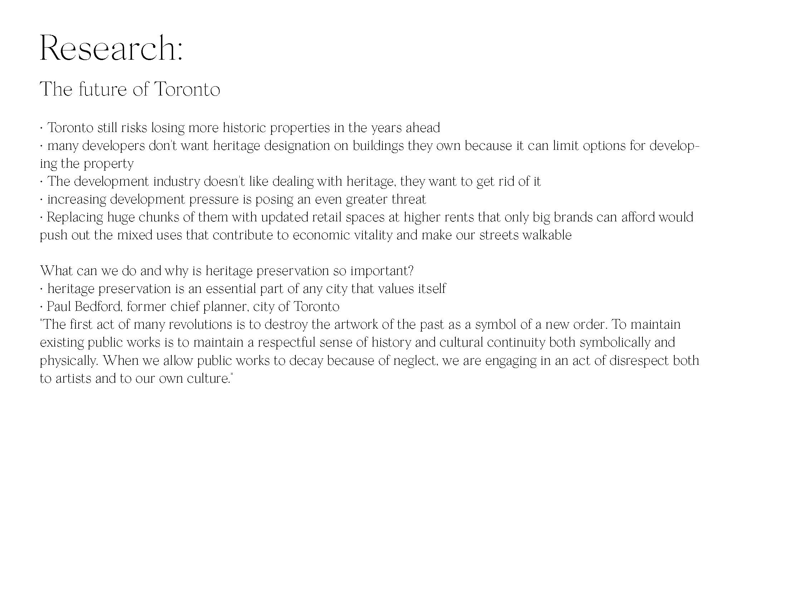
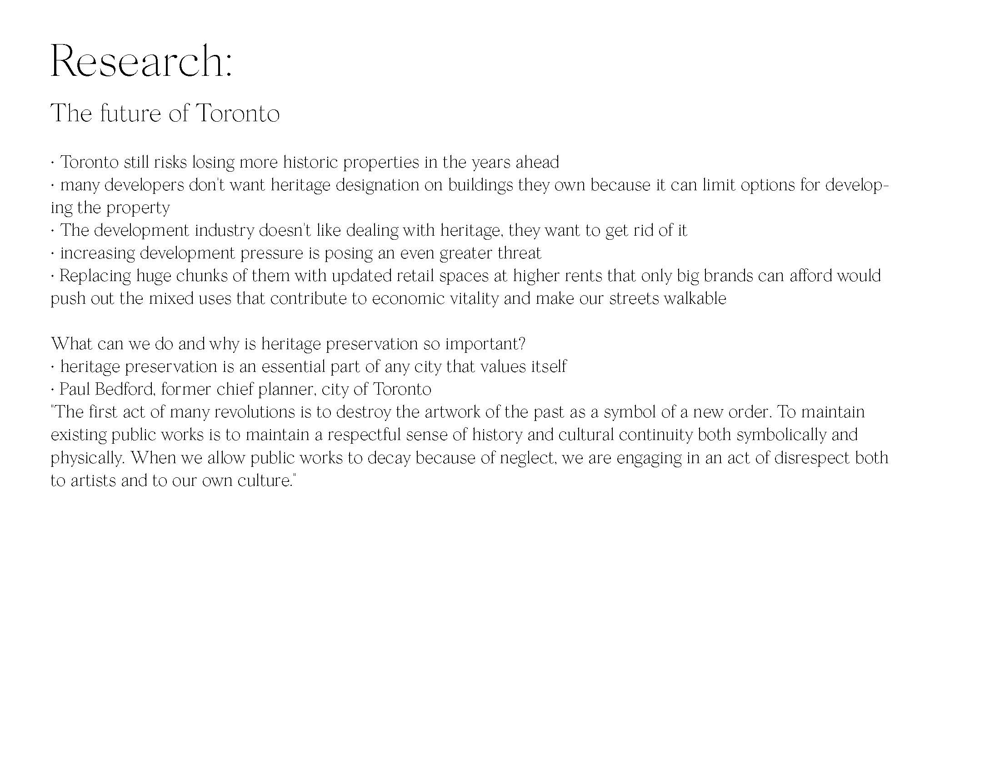

1A. Project Brief
An informative visual narrative based on research related to Toronto neighborhoods.
1B. Intro
This project involves two infographic posters that first compare features of existing Toronto heritage buildings then explore the conflicts behind recent demolitions.
The first infographic features three infamous heritage buildings located in downtown Toronto. It displays a brief introduction and the year each building is built in the past, making it easier for readers to understand and compare three of the city’s most prominent structures.
By doing additional research on Toronto’s heritage buildings, the second infographic focuses on demolitions. The poster displays a demolished building from the past, current conflicts behind demolitions and the reason why heritage preservation is important in the future.
3A. Poster 1 Sketches
Inspiration for this poster comes from gallery installations. My idea is to display the three buildings in a 3D display box and the buildings will act as bars of a graph, text boxes above the buildings will hang like artist info boards in galleries. My approach is to enhance the importance of preserving and maintaining heritage buildings of our city.
3B. Poster 1 visual elements
3C. Poster 2 Sketches
Since my poster contains content about the past, present and future, I decided to visualize that with colour. I will create a gradient background that progresses from black to a bright pink which can help show a stronger timeline.

3D. Poster 2 visual elements
Here are three different approaches on three buildings, each approach represents a time period.
For the past section, I kept it simple since this building is already demolished and it’s more ideal to keep it untouched in order to
enahnce it’s beauty in the 50s. The present section is a building that is going through demolition. I added a plastic wrap
effect to give off a feeling that its vanishing, and if people do something about it, it can still recover and return to its
original state. The building for the future section is actually a picture of Gladstone Hotel in Toronto. This is a good example of maintaining heritage buildings, so I chose it and gave it two transparency layers to allow the building to blend into the gradient background.
4A. Poster 1

4B. Poster 2
For the finalized poster 2, I decided to
focus on color. Since my poster contains
three parts: the past, present and
future. I created a gradient background
that progresses from black to
a more dominant and futuristic color theme. This can help visualize a stronger timeline and guide the viewer’s eye from top
to bottom. Once I had all the visual elements and text, the biggest thing I struggled with was the layout and arrangement of type and images. I found it very challenging to place everything
on the same page without overwhelming
the eyes. I started off with placing all the elements in the middle, but my poster looked
really dull and boring to look at. In order to come up with a more interesting visual hierarchy, I began picking information I want to emphasize. After that, I adjusted the weight of headlines and numbers to enhance information that I want to highlight.

5. Reflection
Through this profect, my biggest takeaway was the importance of aligning elements together. It’s such a small move but the effect it has on
the overall composition is significant. As viewers, we prefer to spend time to read information that is pleasant and comfortable for the eyes to read. Aligning elements
in a thoughtful manner gives a flow to
the process of reading the information. Establishing a hierarchy system and
defining which element should be the most important also helped a lot during the final
touch-up process, it made the overall design
more dynamic instead of having all the elements displayed in the same size. I also realized how additional lines should only be added if they have a purpose,
this keeps the information simple and
straight-forward for the readers to read and
guides the viewer’s eyes around the page easily.
For this project, I remember picking to design posters instead of a website
because it seemed more challenging and it require more design thinking. For a website, there’s unlimited amount of space for a
designer to lay everything out spaciously. But on the other hand, a poster has required dimensions and that was what I struggled with the most. There’s so much more information I wanted to add but too much text is only going to overwhelm viewers. I find that having a contructed flow on visual elements really help put the
overall design of the posters together. After coming up with a unified approach on the layout, placing all the elements together became much more easier than before.
 
